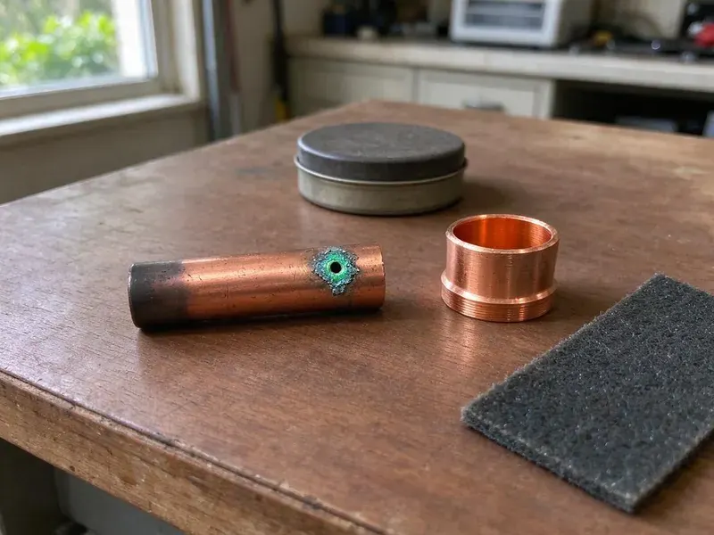

Water Softener Repair in Wenatchee, WA
FHN Plumbing handles water softener repair in Wenatchee, WA, from salt bridges to failed valves, and tests the water when done.
- Fast Softener Testing
- Flat Pricing
- Workmanship Warranty
- Most Major Brands

Hard Water Back in Wenatchee, WA?
Call now and we will test your water and fix the softener, often on the first visit.
Licensed Water Softener Repair in Wenatchee, WA
FHN Plumbing sees what hard water does to fixtures, water heaters and tankless units after a softener quits. Metered and timer units are both familiar. Seals, pistons, injectors and motors get replaced as needed, and the resin gets cleaned or replaced when the test shows it has lost capacity.
Some of what we do:
- Control valve diagnosis and leak repair
- Electrical and programming fixes
- Brine tank repair and salt bridge removal

Additional Plumbing Repair Services in Wenatchee, WA
We offer expert plumbing repair services across Wenatchee, WA to fix leaks, restore flow, and keep your system running smoothly.


Customers
Why Choose FHN Plumbing for Water Softener Repair in Wenatchee, WA?
A broken softener spreads hard water problems through the whole house. We go after the root cause, not just the symptom. A clogged injector, for example, looks like a salt problem from the brine tank, but adding more salt will never fix it. Diagnosis matters.
- Approved Parts, We use parts approved by the maker on every softener repair.
- Clear Answers, You get a plain explanation of the problem and the options before work begins.
- Repair First, We suggest replacement only when the tank or valve is beyond economical repair.
Citywide Coverage
Local crews from FHN Plumbing cover Wenatchee for softener repair. They know the area's plumbing and reach homes quickly.
Experienced Team
Experience on our team covers salt-based and salt-free systems. Training keeps them current on new valves and controls.
Safety-First Approach
Electrical parts and plumbing connections both need care on a softener repair. We follow the codes Wenatchee and Washington enforce on every job.
Trusted Certified Wenatchee Plumbing Services Professionals
At FHN Plumbing, we are proud to offer certified plumbing services throughout Wenatchee, WA. Credentials matter in this trade. Every repair, install and maintenance visit follows strict safety and quality rules, and the plumbers doing the work carry recognized industry credentials.
Call Us Now PHCC Plumbing Contractor Recognition
PHCC Plumbing Contractor Recognition Better Business Bureau (BBB) Accreditation
Better Business Bureau (BBB) Accreditation Angi Certified Pro
Angi Certified Pro ISO 9001 Quality Management Certification
ISO 9001 Quality Management CertificationWater Softener Problems We Fix in Wenatchee, WA
Control Valve Repair in Wenatchee
Water that runs to the drain all day usually means the control valve is stuck between cycles. FHN Plumbing technicians rebuild these valves with the correct seal and spacer kit for your model. Timing problems get fixed, whether mechanical or electronic. Parts for the common valves are stocked, which keeps most repairs to one visit.

Resin Bed Replacement in Wenatchee
Chlorine eats resin slowly, and after enough years the beads swell, break and stop exchanging the calcium and magnesium they are supposed to hold. This is common with older systems on treated city water. FHN Plumbing pulls the old resin and fills the tank with new media. The softener works like new.
Softener Repair vs Replacement Cost in Wenatchee, WA
Most softener repairs cost $150 to $450, while a resin replacement often runs $400 to $900 depending on tank size. A new quality softener installed typically costs $1,500 to $3,500. Sound tank and valve, repair wins. An obsolete valve with scarce parts tips the decision toward a new head or a new unit.
Commercial Water Softener Repair in Wenatchee, WA
Laundromats and restaurants in Wenatchee, WA run through soft water fast, and a dishwasher or boiler starts scaling the moment the softener stops working. Downtime costs money. FHN Plumbing repairs commercial-grade softeners, including twin-tank and larger valve systems. We schedule around business hours.
Bypass and Fitting Leak Repair in Wenatchee, WA
Bypass valves, the O-rings where the valve meets the tank, cracked fittings and the drain line are the usual leak points. Even a small drip wastes water and can stain a garage floor or rot a cabinet. We replace O-rings or fittings and test under pressure. A cracked mineral tank usually means replacement.
Salt Usage and Settings Repair in Wenatchee
Too much salt or water use usually means settings that do not match your hardness or household. Older timer units regenerate on a schedule no matter how much water you used. We retest hardness and reprogram the valve, or upgrade the head to a metered control that only regenerates when the resin is actually close to exhausted. Salt bills drop.
Water Softener Leak Detection and Repair in Wenatchee, WA
Cracked tanks, loose fittings and failed O-rings are behind most softener leaks. A small drip still wastes water and damages flooring. We find the source, whether it is the bypass, the valve-to-tank seal or the drain connection, and replace the seal or fitting that failed. Then it gets a pressure test.

Salt Bridge and Brine Tank Service in Wenatchee, WA
The tank looks full but makes no brine. A hard crust has formed and is keeping the salt from dissolving. We break up bridges, clean out mushy salt, inspect the float and brine well and repair the safety valve. In a hot or damp garage, switching to pellets cuts down on bridging.
Water Softener Repair Near Me in Wenatchee, WA
Searching for water softener repair near me in Wenatchee, WA mostly turns up salt delivery. FHN Plumbing sends an actual repair tech, often the same or next day. Valve rebuilds, resin swaps and brine repairs happen on the spot, with parts for local brands on board. You get soft water back quickly.
Municipal water west of the mountains in Washington is generally soft, while supplies on the drier east side tend to run harder. Our technicians know the water conditions across town and set each repaired softener to match. That means softer water and lower salt bills.
FHN Plumbing at a Glance
- Fully licensed plumbing team covering Wenatchee, WA
- 24/7 emergency service with same-day scheduling
- Upfront, flat-rate pricing before work begins
- 4.9-star rated by 382+ Washington customers
Wenatchee Map
Wenatchee Information
- Population
- 35,526
- Area codes
- 509/425/253
- Service area
- Wenatchee and communities within 40 miles
- Nearby
- Yakima, Sammamish, Redmond, Bellevue
Municipal water west of the mountains in Washington is typically soft, while supplies on the drier east side tend to run harder. A softener that works protects water heaters, fixtures and appliances in Wenatchee, WA from fast scale buildup.
Expert Services
Reach out to FHN Plumbing for honest, reliable plumbing from people who know the trade in Wenatchee, WA.
Our Specialized Plumbing Services in Wenatchee, WA
At FHN Plumbing, we handle the full list of plumbing services across Wenatchee, WA. From leak detection to full system installs, our team works fast and charges fair prices on homes and commercial properties alike. Explore our core services below:


Our Water Softener Repair Process in Wenatchee, WA
From diagnosis to final testing, FHN Plumbing follows the same steps across Wenatchee, WA.
Call Us
Call FHN Plumbing at (425) 491-3131 to schedule. We gather a few details about the softener.
Diagnosis and Plan
A plumber inspects the softener, tests the system and explains the repair. You get a clear price first.
The Repair
Once you approve, we repair it with quality parts. The system gets tested before we go.
Frequently Asked Questions About Water Softener Repair in Wenatchee
Expect $150 to $600 in Wenatchee. Clearing a drain line or resetting a board is on the cheap side. Major component replacements, like a full control valve or a new resin bed, cost more because of the parts and the extra labor to drain and refill the mineral tank.
Returning hardness is the main one, with spots on dishes and dry skin and hair. Odd salt use, a noisy regeneration, a leak or no regeneration also point to trouble.
A quality softener can last 10 to 15 years or more, though resin may wear out sooner on chlorinated city water. Control valves often need a seal kit after several years.
Soap that will not lather and white scale on faucets are good clues. Other signs are spotty glasses, stiff towels and a salt level that never drops.
Parts and labor are both covered by FHN Plumbing. Warranty details come at the time of service.
Fleck, Culligan, Kenmore, Whirlpool, Morton, EcoPure, GE and Clack are all on the list. We carry replacement parts for most of their models.
Yes. FHN Plumbing warranties both labor and replacement parts on every softener repair, and the terms come in writing at the time of service.
Every one to two years is a good interval. A regular checkup spots trouble early and keeps capacity up.
What People Are Saying About Our Plumbing Experts?

Daniel K.
A pipe burst in the garage ceiling at 11 at night. Someone answered on the second ring, and the plumber was in my driveway about fifty minutes later. He shut off the main, cut out the split section, and had water back on before 2 am.
Emergency Plumbing · Redmond, WA
Marcus H.
Grease from the fryer line kept clogging the kitchen drain at my diner. FHN Plumbing hydro jetted the line after closing, showed me the buildup on camera, and set us up on a quarterly cleaning so it does not catch us on a Friday again.
Drain Cleaning · Yakima, WAJames P.
Our restaurant had a slow leak at the hand sink that was rotting the cabinet base. FHN Plumbing came in at six in the morning before prep, replaced the trap and both supply lines, and was packed up before my first cook clocked in.
Commercial Plumbing · Kent, WA
Sofia M.
Two new toilets went in during one visit. The tech set them on new wax rings and swapped the old supply lines. He also noticed our bathroom faucet dripping and replaced the cartridge while he was there. No mess left behind.
Toilet Installation · Yakima, WA
Angela D.
Our sump pump quit during a storm and the water was an inch from the basement carpet. FHN Plumbing put in a new pump with a battery backup that same evening. We have had two heavy rains since. It kicked on both times.
Sump Pump · Yakima, WACarlos V.
Our house still had galvanized pipe, and upstairs the shower was a trickle. The crew repiped everything in PEX over three days and patched every drywall hole before they left. The pressure difference is night and day.
Repiping · Renton, WA